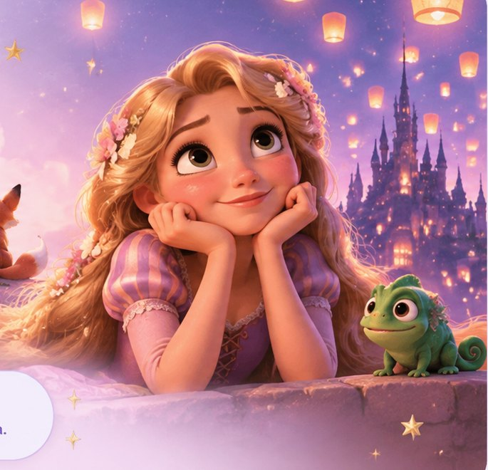

Te dediqué «Princesa».
Vi Soy Luna por ti. Y ahora hay una canción que quiero que recuerdes como un mensaje mío: para mí, tú eres mi princesa, tan bella, preciosa y única.
Te amo con toda mi alma, HeyHey. — Noel HM ♡
Este rinconcito es para ti: para cuando necesites respirar, sonreír, aprender algo nuevo o recordar todo lo bonito que hay en ti. No tienes que demostrar nada para merecer un descanso.
Gira la ruleta y déjate sorprender, mi princesa.
A veces necesitas sonreír; otras, una historia, una curiosidad o unas palabras de cariño. Esta ruleta escogerá por ti.
¿Qué nos deparará la suerte, HeyHey?
12 posibilidades · Todas tienen algo bonito ♡
Un dato curioso para hoy. Mañana habrá otro, y si hoy quieres descubrir más, aquí hay muchas pequeñas sorpresas.
Preparando un descubrimiento para ti…
Los datos proceden de una selección editorial inicial; cambian con la fecha y no necesitan registrar visitas ni recopilar datos personales.
Hay historias que nos enseñan a mirar más allá de lo que se ve. En El Principito, una rosa, un zorro y tantas estrellas nos recuerdan que los lazos se construyen con paciencia y cariño.
Y quiero que sepas algo, HeyHey: no necesito que seas perfecta. Me encanta la persona que eres, tu cabello rojo, tu manera de sentir y todo lo que vamos descubriendo juntos.
Con mucho amor, Noel HMMe encanta conocer tus historias favoritas. Gracias por compartir conmigo ese pedacito tan tuyo.
Vi Soy Luna por ti. Y ahora hay una canción que quiero que recuerdes como un mensaje mío: para mí, tú eres mi princesa, tan bella, preciosa y única.
Te amo con toda mi alma, HeyHey. — Noel HM ♡
Sé que Boulevard es uno de esos libros que guardas cerquita del corazón. Me encanta escucharte hablar de Hasley, Luke y las canciones que conectas con su historia.
Quiero conocer cada historia que ilumine tu mundo. ♡
Me encanta la persona que eres y también la persona en la que te estás convirtiendo. Espero que este pequeño espacio te recuerde que puedes crecer sin exigirte ser perfecta, que está bien tener días difíciles y que siempre mereces tratarte con ternura. Quiero verte florecer a tu manera, a tu tiempo. Y si algún día olvidas lo valiosa que eres, aquí encontrarás un recordatorio.
Con mucho amor, Noel HM ♥Respiremos juntos un momento. Sigue el círculo si te ayuda; también puedes hacerlo a tu propio ritmo, sin forzarte.
Eres mi princesa, siempre tan bella y preciosa.
Quiero que sepas que para mí eres maravillosa. Me encanta tu sonrisa, tu corazón tan bonito, tu cabello rojo y esa forma tan tuya de iluminar mis días.
No tienes que ser perfecta, ni tener todo resuelto. Quiero acompañarte, escucharte y recordarte lo mucho que vales. Vamos poquito a poquito, mi amor.
Te amo muchísimo. Con todo mi corazón, Noel HM ♡
Mi niña preciosa ♡HeyHey, esto lo escribí después de nuestra primera cita. Quería guardar cómo empezaba a conocerte, las cosas que me contabas y lo afortunado que me sentí de coincidir contigo.
Érase una vez… ¿Así es como inician las novelas?
Siempre me ha parecido curioso cómo la vida te pone frente a personas que te ayudan a crecer, ya sea por medio del dolor o de la felicidad. Personas con las que, probablemente, en otra etapa de tu vida no habrías podido coincidir.
Ahora, en este momento de mi vida, me resulta interesante pensar en todos los cambios que he tenido. Porque si algo he aprendido es que la única constante aquí son los cambios. ¿Y qué seríamos sin ellos? Tal vez la vida sería más cómoda… pero también menos real. A veces los cambios duelen, pero también son lo que nos empujan a evolucionar.
Hoy me pregunto: ¿las coincidencias existen? Y la respuesta inmediata es: no. Siempre he creído que todo tiene una razón de ser, aunque a veces no sea necesario encontrarle el sentido.
Son muchas las preguntas cuando conoces a alguien nuevo, alguien que poco a poco se va colando en tu vida cotidiana… ¿por qué ahora?, ¿por qué no antes?, ¿por qué no después?
Pero pensar en eso parece irrelevante cuando tienes a alguien frente a ti.
Ahora sí, repito: érase una vez un chico que no tenía idea de lo importante que era aprender a bailar; no para impresionar, sino para conectar con las personas. Fue en medio de esos cambios cuando la conocí. Así es, estoy hablando de “Chofis” o, mejor dicho, ese fue el primer momento en el que yo le puse un rostro a ese apodo.
Eventualmente descubrí que su nombre es Sofía y, sorpresivamente, que tenía un segundo nombre: “Edna”. Que al final resultó ser el primero.
Hoy dedico este escrito para ella. Al parecer le gusta la lectura; me contó sobre su libro favorito: Boulevard, de Flor M. Salvador (curiosamente ahí también tocan su canción favorita: Hoobastank — The Reason). Y estaría muy feliz de que le dediquen la canción de Loco (Tu forma de ser) y, por supuesto, no podíamos dejar pasar el mariachi y las flores.
Mi primera impresión fue que ella es una chica muy alegre. Siempre estaba sonriendo y le encanta bailar; fue ahí donde la conocí, en una academia de baile. Después descubrí algunas cosas sobre ella.
Me contó una lista larguísima y maravillosa de gustos muy suyos: le encantan las fresas naturales, el chocolate amargo, el sushi y los mariscos; no le gustan varias verduras crudas ni casi nada de picante. Sus colores favoritos son el morado, el negro y el rojo. Me sorprendió un poco que tuviera tan clara la lista de lo que le gusta y lo que no. Fue una plática muy divertida cuando llegó a visitarme; me alegró que me contara todo eso.
Y dio mucho gusto saber que le gustaba el mismo grupo que a mí: Morat. De hecho, terminé regalándole un llaverito de una guitarra. Además de las canciones de bachata y salsa, creo que los gustos en común también son una forma de crear relaciones.
Hoy guardo ciertas memorias de momentos con ella. Primero, cuando estábamos en la academia y me sorprendía cómo bailaba. Después, en algún momento, al parecer nos “saludamos” (y digo saludamos porque no estoy seguro si fue ella o yo), pero intercambiamos un par de palabras en donde ella me motivaba para intentarlo. Debo decir que fue una buena primera impresión.
Después hubo otro momento: me tocó bailar con ella bachata. Eran mis primeras clases y todavía me estaba acostumbrando al paso básico, aunque al final no me fue tan mal. Ocasionalmente la veía en las clases y la saludaba. Pero fue hasta aquel 19 de diciembre de 2025 cuando tuvimos una conversación un poco más fluida. Me empezó a contar algunas cosas sobre ella, como que estudiaba psicología, y de esa plática creo que empezamos a tener mayor claridad de la existencia del otro.
Llegó el fin de año, cada uno haciendo cosas diferentes. El punto de partida, cuando realmente empezamos a acercarnos, fue cuando nos vimos en una clase de bachata; ahí me sentía con un poco más de confianza. Dentro de la práctica ella grabó un video; no lo noté hasta que me lo había compartido.
Después nos encontramos en un social de la academia. Le comenté que había visto un anuncio sobre sus prácticas de terapias y le pregunté si podía escribirme. Quedamos en que sí; luego en que no (otro día), pero al final sí. Y descubrí que su canción favorita de salsa es Acaríciame.
De ahí empezamos a platicar más seguido. Me compartió algunos videos de ella bailando, un gesto muy bonito. Dato curioso: no le gusta su pelo negro y corto. El rojo es su color; también le gusta el maquillaje, y lo hace muy bien. Tiene muchos talentos esta muchacha (ella también dice “muchacho”; le gusta como suena).
Su pasión es el baile: salsera y bachatera toda la vida. También cantar, tocar el teclado —muy bien, de hecho—, pintar, escribir y leer muchísimo. Le encantan las manualidades, el sudoku y las sopas de letras. Le gusta cocinar, especialmente la repostería. Tiene gustos musicales variados, probablemente aún más que los míos.
Me contó de los conciertos que le ilusionan, de Shakira y Antología, de Morat, Rels B, Romeo Santos y Adele. Su princesa favorita es Rapunzel; ahí descubrió los camaleones. Y guarda desde niña mucho cariño por las iguanas.
Hay un montón de detalles que me hacen sonreír cuando los recuerdo. Desde los stickers que le hizo su mamá hasta aquella visita inesperada a mi casa. Y aquella vez que me invitó a acompañarla a una fiesta de quince años: al final me convenció y disfruté muchísimo el momento.
También estaba en nuestros planes ver Boulevard en el cine, porque le encanta tanto el libro que, si fuera por ella, tendría una biblioteca en casa. Sueña con más historias, más libros y mil formas de imaginar.
Probablemente me he extendido un poco, pero esta es la inspiración que encontré ahora. ¿Qué sentido tiene estar inspirado y no plasmar mis ideas? Sería un desperdicio.
Hoy seguro te preguntarás: ¿por qué escribo esto? Y es para agradecerte y recordarte que, si algún día dudas de ti, vuelvas aquí. Léelo despacio. Recuerda quién eres, todo lo que te gusta, todo lo que amas, todo lo que te hace única.
Tal vez las novelas empiezan con “érase una vez” porque hablan de momentos que marcan un antes y un después. Y conocerte, sin duda, fue uno de ellos.
Con mucho amor, Noel HM ♡
Un recuerdo de nuestros primeros pasos. Escrita con cariño, para volver a ella cuando quieras.
Si quieres, cuéntame cómo estás. Puedes guardar tus respuestas solo para ti o elegir enviármelas. No tienes que responder nada que no quieras compartir.
Aquí estoy para ti. Te amo con toda mi alma. Con mucho amor de Noel HM ♡
Las canciones que me recuerdan a ti, nuestras estrellas, las cartas y los sueños que iluminas.
Hay canciones que ya no escucho de la misma forma desde que llegaste. Estas cuatro me hacen pensar en ti, mi princesa.
Matteo · Soy Luna
Te la dediqué porque cada vez que pienso en mi princesa, pienso en ti. En esa sonrisa y en la chica tan preciosa de cabello rojo que amo.
Para mi princesa favorita ♡Una canción que me recuerda a ti
Me encanta que seas tú, sin tener que aparentar nada. Con maquillaje o sin él, con días alegres o difíciles: hay algo en tu esencia que adoro.
Me encantas tal como eres ♡Otra de las canciones que me llevan a ti
Hay canciones que me hacen sonreír porque tienen algo de la energía de nuestra historia. Esta ya vive entre esos recuerdos que llevan tu nombre.
Hasta mis canciones se acuerdan de ti ♡Hoobastank
Me recuerda nuestras primeras conversaciones, cuando me contaste de Boulevard y de la música que llevaba esa historia. Escucharte hablar de lo que amas fue otra forma de conocerte.
Gracias por compartirme tus mundos ♡Estas son dedicatorias escritas por Noel; no se reproducen canciones ni letras. ♡
HeyHey, hay palabras que quisiera dejarte escondidas entre las estrellas. Toca cualquiera y encuentra un pedacito de mi cariño.
No tienes que sentirte de una forma específica. Si alguna carta te llama, aquí está para ti, sin prisa.
Para esos sueños que llevas en el corazón. Escribe uno y mira cómo su luz sube al cielo. No tienes que cumplirlo hoy, ni mañana.
Que cada sueño encuentre su tiempo ♡